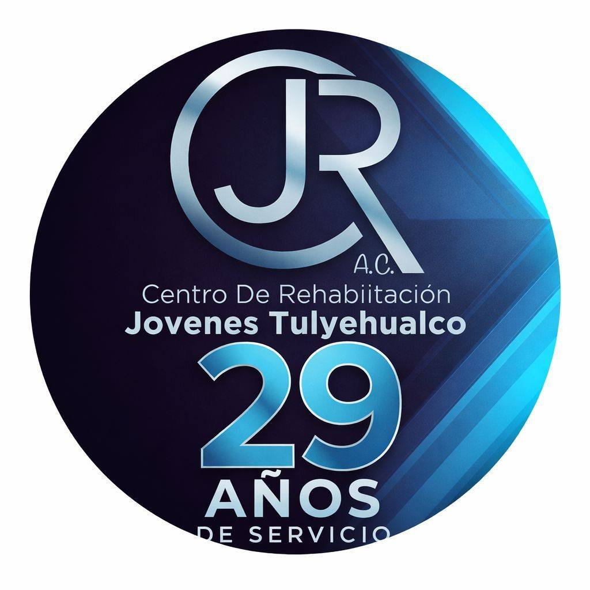

Un camino de acompañamiento, apoyo y recuperación. Estamos aquí para ayudarte a ti y a tu familia.
Programas integrales de rehabilitación diseñados para apoyar a cada persona en su proceso de recuperación.
El Centro de Rehabilitación Jóvenes Tulyehualco A.C. surge con el propósito de ofrecer apoyo a personas con problemas de adicciones y a sus familias.
A través de una atención basada en el respeto, la sensibilidad y el compromiso social, fortalecemos los procesos de cambio y reintegración.
Conocer más